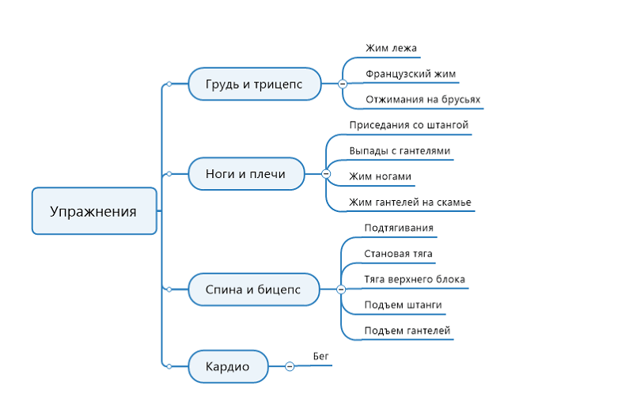
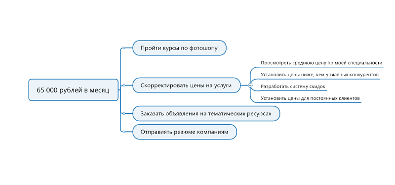
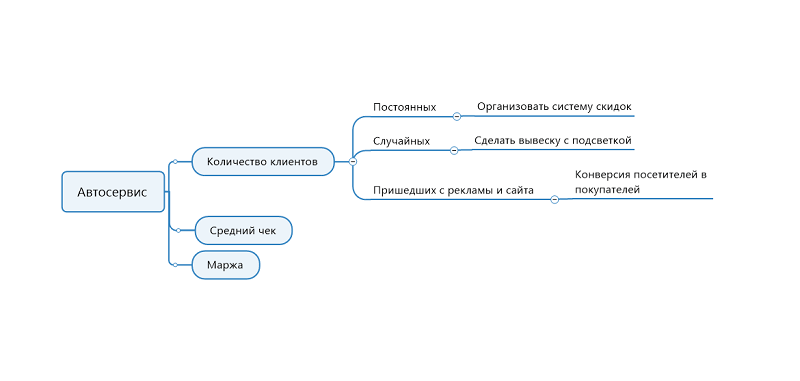
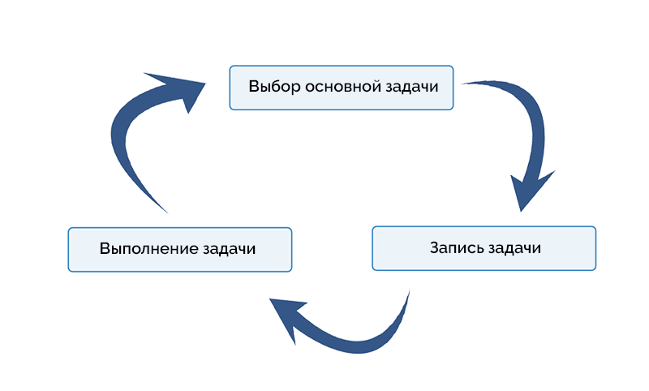
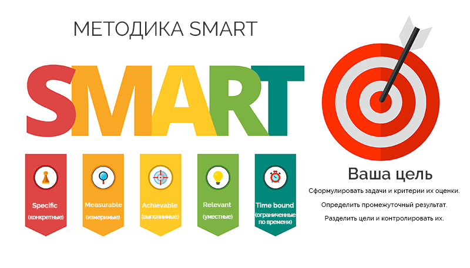
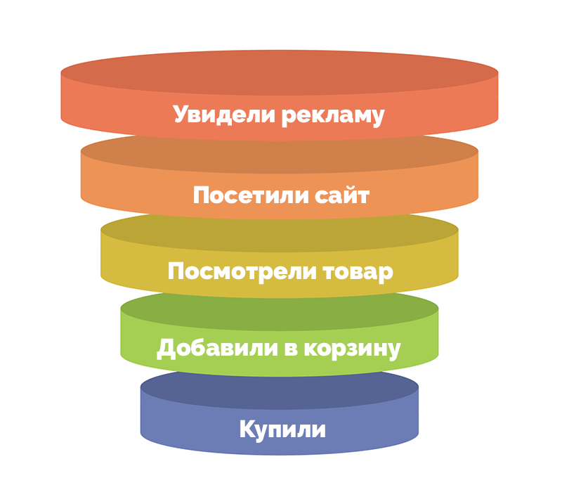
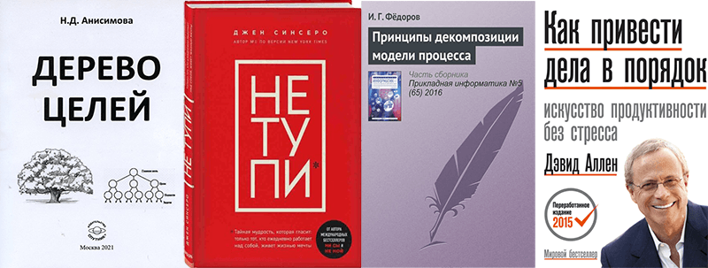

В основе декомпозиции лежит принцип «разделяй и властвуй». Чем объемнее цель, которую мы ставим перед собой, тем сложнее подступиться к ней. Декомпозиция – это методика упрощения процесса достижения любой цели ? путем его пошаговой детализации.

Что такое декомпозиция простыми словами
Разделение целого на составляющие. В статье речь пойдет преимущественно о маркетинге, но декомпозировать можно все что угодно, это поможет упростить взаимодействие с предметом декомпозиции. Например, вынести шкаф-стенку из комнаты можно только частями, это самый наглядный пример декомпозиции.
А вот как работает декомпозиция целей: у вас есть цель – сделать капитальный ремонт в квартире. Сделать весь ремонт сразу невозможно, это займет месяцы. Если планирование будет неграмотным, то работа затянется, возможно, придется переделывать часть работы или какие-то материалы будут испорчены (например, если сначала положить паркет, потом ломать стену-перегородку). Декомпозиция нужна, чтобы разделить большую цель на подцели поменьше. Так общий ремонт делится на ремонт в гостиной, ремонт в спальне, ремонт на кухне, ремонт в коридоре и в ванной, а последовательность определяется по обстоятельствам. Каждый этап можно делить дальше, например, ремонт на кухне включает в себя демонтаж, замена труб и проводки, оштукатуривание, косметические работы.
Суть декомпозиции целей и зачем она нужна
Когда человек ставит себе цель, он заглядывает в будущее и формулирует результат, например, стать долларовым миллионером или научиться играть на гитаре как Томми Эммануэль. По сути это еще не цель, это мечта. Чтобы мечта стала целью, нужен практический подход – декомпозиция. Она позволяет:
{kind=link}
- Понять, насколько реально достижение поставленной цели. Мечтать можно о чем угодно, но как только вы начнете раскладывать процесс воплощения мечты по конкретным шагам, сразу станет понятно, насколько она осуществима.
- Понять, в какие сроки цель может быть достигнута. Самый быстрый способ посчитать время на реализацию цели – разбить ее на простые шаги, посчитать сроки для каждого и сложить.
- Составить понятный план. Ответить на вопрос, что конкретно мне нужно делать завтра, через неделю, через месяц и т.д.
- Избежать прокрастинации. Сместить фокус внимания с огромной неподъемной общей цели на простой фрагмент. Чем проще дело, тем меньше на вас действует лень.
- Оптимизировать управление. Если вы лидер, декомпозиция поможет вам понять, как распределить ресурсы команды оптимальным образом, какие задачи делегировать и кому.
8 основных принципов декомпозиции целей
В основе понятия декомпозиции цели лежит практичность. Важно не просто разобрать задачу по составным частям, а превратить ее в выполнимый, отчетливый, последовательный план. Чтобы это случилось, придерживайтесь 8 простых принципов.
{kind=link}
- Последовательность или пошаговость. Смысл декомпозиции не только в разделении, но и в определении порядка.
- Структурированность. Должна соблюдаться четкая иерархия уровней, где каждый уровень подчинен предыдущему.
- Понятно сформулированные задачи на всех уровнях. Исключить двусмысленность или вероятность неверного понимания.
- Единый логический принцип. Нельзя делить разные уровни по разным принципам, иначе возникнет неразбериха.
- Суммы подзадач должно быть достаточно для выполнения задачи. Если это условие не выполнено, значит не все шаги выполнения учтены, каких-то не хватает.
- Подзадач на одном уровне должно быть не более 7. Если получается больше, попробуйте объединить их в несколько групп.
- Чем проще (мельче) цели, тем лучше.
- Глубина декомпозиции (т.е. количество уровней) зависит от уровня квалификации исполнителя. Если вы не новичок, способны выполнить задачу профессионально, можно ограничиться двумя-тремя уровнями глубины. Но если делаете это впервые, то количество уровней должно быть максимальным, это облегчит работу.
Виды декомпозиции
Для вашего удобства мы разделили основные виды декомпозиции на две большие группы по главному критерию – принципу организации действия и приоритету деления.
{kind=link}
По принципу организации действия
Горизонтальная – по типу задач с их поэтапным выполнением. Такая декомпозиция применяется редко, т.к. в большинстве реальных жизненных случаев она непрактична. Например, чтобы окончить школу, нужно усвоить школьные программы по математике, физике, литературе и т.д. Горизонтальная декомпозиция выглядела бы так: выучить математику, затем выучить физику, затем выучить литературу. Вроде бы в этом есть своя логика, но она не работает в реальной жизни, поэтому школьная программа строится по вертикальному принципу.
Вертикальная – здесь тоже происходит разделение на задачи по типу, но развитие происходит комплексно, задачи взаимодействуют друг с другом. На нашем примере это означает, что школьник каждый день посещает занятия по математике, физике и литературе, а в конце года сдает годовые зачеты по всем этим предметам.
По приоритету деления
Функциональная – приоритетом является функция. Если вы посмотрите на клавиатуру ПК, то увидите типичный пример функциональной декомпозиции – основное пространство занимают буквы, вокруг них группируются цифры, функциональные клавиши, клавиши управления и навигации. Визуально это выглядит как одна панель, но функциональные блоки легко обнаружить и выделить.
Структурная – приоритетом является структура. Сидения в автобусе или парты в школьном классе расставлены исходя из интересов организации пространства, а не людей. В автобусе важно, чтобы был свободный проход по салону, в классе – чтобы ничто не мешало держать в фокусе учителя и доску, а также, чтобы по классу можно было легко перемещаться. Какие именно пассажиры (старики, дети, льготники) сядут в той или иной части салона, не имеет никакого значения. Так же и в классе – мальчик, девочка, отличник или второгодник – все они могут занимать любые места, меняться местами в любой момент или на каждом уроке рассаживаться в новом порядке.
Такой принцип несовместим с функциональной декомпозицией. Представьте, что клавиши на клавиатуре всегда остаются на своих местах, но их значение меняется каждый день.
Объектная – приоритетом является объект. Имея сложную систему, состоящую из независимых объектов, мы не разбиваем их на группы для удобства (как в структурном варианте) или по схожей функциональности, но каждый объект принимается, как отдельный блок.
Методы декомпозиции в зависимости от характеристик проекта
Разделению на составные части подлежат не только цели, широко применяются декомпозиция проекта, декомпозиция продаж и другие. Иногда уровни соответствуют географическим регионам, подразделениям компании и т.д. В любом варианте число уровней декомпозиции редко превышает 6 для самых сложных проектов, например, программ государственного масштаба. Единого метода декомпозиции не существует, решение всегда зависит от специфики проекта, поэтому мы рассмотрим несколько популярных методов.
{kind=link}
Поэтапный метод
Задача делится на этапы, которые выполняются последовательно друг за другом и приводят к конечному результату. Каждый этап детализируется таким образом, чтобы в итоге получился список задач, которые можно записать в ежедневнике, включить в план на день.

Советы:
- Разбивайте этапы на задачи из соображений практичности, каждая должна быть выполнимой и цельной.
- Основными сделайте те задачи, которые жестко привязаны ко дедлайну, остальные старайтесь выполнять в свободные часы, в промежутках между остальными.
- Если можно решать какие-то задачи параллельно, делайте это.
- Формулируйте цели по технологии SMART.
- Не переоценивайте свои возможности, оставляйте запас времени на случай, если что-то пойдет не по плану.
Метод измеримых показателей
Это разновидность поэтапного метода, организация происходит по тому же принципу, но этапы имеют не функциональное, а числовое значение – измерение (по времени, по стоимости и т.д.). Удобно, если вы работаете с цифрами – с финансами, со спортивными достижениями или с чем угодно, поддающимся измерению.

Советы:
- Учитывайте тип прогрессии – арифметическую или геометрическую. Спортивные тренировки приводят к росту показателей в арифметической прогрессии, где отклонения от значений не слишком большие. А рост подписчиков ютуб-канала может происходить в геометрической прогрессии.
- Составьте несколько графиков для разного развития событий – лучший, средний и худший варианты, чтобы знать, на что вы можете рассчитывать в каждом случае.
Дерево зависимостей
Не каждая цель может быть разложена на последовательные этапы, иногда это комплекс мер, не связанных между собой. В данном случае результат является изменяемой гипотезой, а сами действия могут постоянно корректироваться в зависимости от промежуточных результатов. Здесь мы видим множество задач, влияющих друг на друга и предполагающих некий результат в сумме. Декомпозиции подлежат именно эти задачи – составные части дерева.

Советы:
- Отсекайте неэффективные меры, чем меньше веток у дерева, тем проще работать с ними.
- Всегда проверяйте гипотезу, прежде чем вложить в нее значительные ресурсы.
Декомпозиция одного шага
Декомпозиция задач в некоторых случаях не представляется возможной, потому что условия выполнения постоянно меняются, вынуждая вас импровизировать, изменять стратегию поведения, приспосабливаться. В такой ситуации применяется декомпозиция одного шага. Вы задаете себе вопрос – «какое действие я могу сделать сейчас для достижения цели». Ответом должна стать простая задача, она заносится в ваш список дел, выполняется, потом вы повторяете всю процедуру, начиная с первого шага. Таким образом, можно ежедневно прилагать актуальные усилия и гибко подстраиваться под внешние условия.

Советы:
- Не отказывайтесь от составления плана совсем, не делайте на него ставку, но не переставайте планировать следующие шаги. Важно быть готовым в любой момент внести в план любые изменения.
- Регламентируйте сроки выполнения каждой задачи.
Как реализовать декомпозицию
Декомпозиция процесса или цели в своей основе имеет три шага – разбивка на шаги и уровни, составление карты, уточнение карты. Сделать это грамотно вам помогут универсальный алгоритм, корректировка по SMART и метод Трейси.
Декомпозиция по универсальному алгоритму
Эта общая формула подходит для большинства задач. Если вы только начали изучать декомпозицию, этот алгоритм – первое, что следует изучить.
{kind=link}
- Постановка цели. Все начинается с понимания, чего вы хотите. Именно эту стратегическую сверхзадачу нужно будет разделять на этапы и уровни, сформулируйте ее максимально точно.
- Первичное деление на этапы. Здесь определяется первый уровень, он включает в себя от 2 до 7 этапов. В самом типичном варианте их может быть 3 – начало, середина и завершение. Если нужно почистить ПК от пыли, это делается в три этапа – разобрать, почистить, собрать.
- Вторичное деление. Каждый большой этап делится на последовательные задачи, так мы получаем второй уровень. Первый блок – разобрать ПК: отсоединить кабели питания, снять крышку системного блока, снять платы. И так далее. Если на втором уровне получились большие блоки, идите на третий уровень.
- Проанализируйте каждую ветку плана. Убедитесь, что в основе лежит один логический принцип, что ветки не противоречат друг другу, выделите лишнее и необязательное.
- Сокращение. Уберите лишние действия, найдите параллельные задачи и скомпонуйте. Так общий план станет точнее и экономнее по времени.
- Реализация. У вас получилась цепочка выполнимых задач, можно приступать к выполнению плана.
Для декомпозиции существуют и пользуются популярностью специальные инструменты mind maps или интеллект-карты. Они предлагают удобные способы визуализации плана, вы можете воспользоваться ими с помощью специальных онлайн-сервисов.
Методика SMART
Декомпозиция всегда опирается на два вопроса – что необходимо сделать для достижения, можно ли сделать это сейчас. Просто повторяя эти вопросы, вы получите список простых действий, сумма которых приведет к выполнению целевой задачи. Однако список задач должен отражать не только последовательность, но и включать в себя понимание необходимых ресурсов и объема. Для этого существует методика постановки целей SMART, согласно которой задачи должны быть:

- Конкретными (specific). То есть – понятными исполнителю, не размытыми и не абстрактными.
- Измеримыми (measurable). Учитывается только то, что можно посчитать.
- Выполнимыми (achievable). Имеется в виду, что задача должна быть в черте выполнимости, на грани возможностей.
- Целесообразными (relevant). То есть - согласованными с другими актуальными целями и задачами.
- Регламентированными по времени (time bound). Дата начала и окончания выполнения должны быть известны.
Чтобы начать применять эти критерии уже сейчас, используйте следующий алгоритм. Сформулируйте цель, сформулируйте критерии оценки результата (как вы поймете, что цель достигнута), определите точки промежуточных достижений (как вы будете понимать, что продвигаетесь), разделите цель на задачи, определите сроки (общие и для каждой задачи в отдельности), установите периоды контроля (как часто вы будете проверять соответствие процесса плану).
Метод Брайана Трейси
Это комплексный подход к достижению цели, основанный на принципах декомпозиции. Последовательность из 10 шагов по системе Трейси выгладит так:
- осознать цель;
- сформулировать намерение и записать его на листе бумаги;
- составить подробный список выгод от достижения цели;
- понять, с чего вы начинаете: каковы стартовые ресурсы, есть ли другие числовые показатели, которые нужно учесть;
- определите сроки;
- выпишите все препятствия, о которых вам известно;
- соберите максимум информации о предстоящей деятельности, проанализируйте ее, выпишите главное;
- определите круг потенциальных союзников – людей, на чью помощь вы можете рассчитывать;
- постарайтесь увидеть конечный результат;
- начинайте без промедлений.
Метод Трейси, это не просто алгоритм декомпозиции, но полноценный инструмент для личностного развития лидера. Он помогает именно работать с целью, стандартные же алгоритмы просто делят ее на части.
Брайан Трейси предлагает условия успеха, которые обязательно должны быть выполнены, иначе достижение цели окажется под вопросом:
- вы знаете свою цель от и до;
- вы готовы отказаться от комфорта ради цели, если понадобится;
- развитие ощущается вами как потребность;
- необходимость прилагать сверхусилия не вызывает у вас страха;
- ваше внимание собрано и сконцентрировано на важном;
- вы не сомневаетесь в успехе.
Визуализация декомпозиции
Инструменты визуализации делают удобной командную работу над планом и его последующую презентацию. Если вы выполняете декомпозицию самостоятельно (допустим, расписываете свой личный график спортивных тренировок), достаточно будет сделать это на бумаге. Как сделать и то и другое – читайте в материалах ниже.
Дерево целей или визуализация структуры
Самый быстрый способ визуализировать план – нарисовать его в виде блок-схемы из нескольких уровней. Для этого вам будет достаточно ручки и бумаги, но также вы можете воспользоваться сервисами для создания интеллект-карт, список которых мы привели ниже. Такую визуализацию называют «деревом целей», это иерархическая структура, наглядно показывающая, каких шагов недостает проекту, а от каких лучше отказаться. Дерево можно «выращивать» самостоятельно или совместно с командой в формате мозгового штурма. Результат командной работы тщательно редактируется, сокращается до самой необходимой структуры.
Сервисы
Редакторы для создания ментальных карт (mind maps) позволяют визуализировать декомпозиции любой сложности. Они не предлагают ничего такого, что нельзя было бы сделать с помощью ручки и бумаги, но предоставляют удобные инструменты и возможность коллективного доступа.
LucidChart – мощный инструмент для работы с диаграммами и майнд мэпс. Поддерживает импорт, связывание данных из таблиц, отношения сущностей и многое другое.
XMind – программа для визуализации, позволяет управлять доступом, пользоваться коллекцией готовых шаблонов и создавать собственные.
Draw.io – бесплатная программа с готовыми шаблонами, возможностью группового доступа и экспорта в популярные форматы.
MindMeister – сервис для мозговых штурмов, заметок, презентаций. Дает возможность коллективного доступа к картам, экспорт в документы разных форматов, есть готовые шаблоны.
MindJet Mindmanager – специализированная программа для работы с интеллект картами, много инструментов визуализации.
Miro (RealTimeBoard) – многофункциональная онлайн доска, создание ментальных карт является одной из множества доступных функций.
Microsoft Visio – профессиональный редактор от Microsoft для создания схем, чертежей, подходит для описания производственных и бизнес-процессов.
Преимущества и недостатки декомпозиции целей
Рассматривая декомпозицию, как метод, разумно было бы говорить только о преимуществах, т.к. применение декомпозиции открывает новые возможности, но не добавляет новых препятствий. Поэтому, используя слово недостаток, мы подразумеваем уже существующую трудность, которая не решается с помощью декомпозиции.
|
Преимущества: |
Недостатки: |
|
|
Декомпозиция в маркетинге
Маркетинг оперирует огромным количеством показателей и чисел, декомпозиция – это инструмент, который позволяет структурировать этот хаос, выявлять зависимости, расставлять приоритеты. Воронка продаж по своей сути является примером декомпозиции, т.к. отражает этапы, которые проходит клиент до покупки товара. Эти этапы также поддаются декомпозиции, что позволяет управлять продуктивностью воронки. Такая необходимость возникает при постановке цели увеличить прибыль на определенный процент. Воронка продаж показывает зависимость прибыли от работы и финансирования на каждом этапе. Повышая финансирование, можно повысить прибыль.

Классический вариант применения декомпозиции в маркетинге – составление плана конкретных действий по достижению целей. Если цель – увеличить средний чек магазина, мы предлагаем несколько путей повышения мотивации клиента покупать больше:
- Бесплатная доставка при покупке на определенную сумму.
- Скидочная система на определенных условиях.
- Акционная система – подарки за покупки.
Это три возможных направления мысли, их можно использовать все вместе или по отдельности, одновременно или по очереди. Они также поддаются декомпозиции. Пример: чтобы организовать бесплатную доставку, нужно рассчитать оптимальную сумму покупки, договориться с курьерской службой, запустить рекламу доставки.
Декомпозиция в IT
Применяется преимущественно вертикальная декомпозиция: над каждым блоком работают специалисты разных направлений, итог работы можно продемонстрировать клиенту и получить обратную связь.
Главные вопросы, на которые помогает ответить декомпозиция в IT:
- что нужно заказчику;
- что заказчику точно не нужно;
- сколько потребуется людей, времени и финансовых затрат;
- каким будет результат в конкретных единицах измерения.
Три уровня декомпозиции в IT на примере разработки сайта
Сначала делим сайт на крупные блоки по функциональности. Мобильное приложение, личный кабинет, админка – это первый уровень.
Второй уровень – декомпозируем один блок, пусть будет мобильное приложение. В приложении есть разные экраны, нужно перечислить их все: экран авторизации, экраны главной страницы, личного кабинета и т.д.
Третий уровень – декомпозируем один блок второго уровня. На экране главной страницы есть множество панелей, кнопок, ссылок, элементов дизайна.
Декомпозиция по Agile
Применяются 5 методов декомпозиции на основе User Story – пользовательской истории или модели взаимодействия пользователя с продуктом.
{kind=link}
Поэтапная – какие этапы проходит пользователь в процессе работы. Например, чтобы заказать пиццу через приложение, клиент проходит следующие этапы:
- поиск – если это ресторан с ассортиментом блюд, разделенных по разным категориям, пиццу нужно сначала найти;
- выбор – почитать состав продукта, сравнить цены, просмотреть отзывы, выбрать размер и добавить в корзину;
- оформление – указать адрес доставки, выбрать вариант оплаты, заказать;
- подтверждение и фидбек – получить заказ, подтвердить получение, поставить оценку службе доставки, написать отзыв о продукте.
Каждый этап прорабатывается отдельно.
Ролевая – разбирается особенность взаимодействия пользователя с сервисом на основе его роли. Например на среднестатистическом сайте всегда существуют роли:
- администратор;
- технический администратор;
- контент-менеджер;
- модератор;
- зарегистрированный пользователь;
- гость.
У каждой из них своя модель поведения и свои нужды.
По сценариям – это разделение по вопросу «что если». Сценарии можно разделить на позитивные и негативные: в первом случае пользователь достигает своей цели, во втором – нет. Например, при использовании формы авторизации позитивный сценарий – клиент ввел логин, пароль и успешно авторизовался в системе. Негативные сценарии: пароль не подходит, логин не подходит, пароль утерян, неверный пароль вводится много раз и т.д.
По операциям – операции можно объединять. Например, вкладка «управление» будет включать в себя целый список операций: удаление, добавление, перемена позиции, смена описания или изображения, смена доступа, смена статуса и т.д.
По бизнес-специфике – здесь важно, как функционирует бизнес, по каким сценариям, с какой последовательностью действий, при каких условиях.
Как декомпозировать воронку продаж
Особенности такой декомпозиции заключаются в ее реверсивности. Сначала ставится финансовая задача на расчетный период, например, увеличение продаж на 10%. Уже от этой задачи выстраиваются цепочки действий, получается обратный порядок – действие определяется результатом, а не результат – действием. Важно учитывать уникальные для продаж числовые показатели, например, средний чек и процент повторных покупок.
{kind=link}
Декомпозиция всегда происходит от воронки продаж. На всех этапах воронки есть процент потенциальных покупателей, который не переходит к следующему этапу. Декомпозиция каждого этапа направлена на то, чтобы уменьшить процент потерь. Воронка продаж сама представляет собой декомпозицию процесса покупки товара. В классическом варианте она включает в себя такие этапы:
- контакт с рекламными материалами;
- переход на сайт магазина;
- просмотр карточки товара или товаров;
- формирование корзины;
- покупка.
Чтобы декомпозировать воронку, нужно выявить факторы, способствующие положительному прохождению клиентом каждого этапа. Например, на покупку влияет формирование корзины, а на формирование корзины – привлекательность карточки товара и т.д.
Необходимо выявить проблемы с помощью сервиса сквозной аналитики. Сервис может показать, что на страницу товара заходят часто, но добавления в корзину не происходит или что объявление редко просматривают.
Наконец, нужно разработать комплекс мер для преодоления выявленных проблем. Например, изменения позиции рекламного объявления, пересмотр описания товара или изображения, изменение элементов интерфейса и т.д.
Расчет и оценка результатов декомпозиции целей
Формула личного дохода от бизнеса выглядит следующим образом:
{kind=link}
Р (результат действия) * КП (количество повторений)
За действие обычно берется продажа или средний чек. Количество повторений зависит от выбранной стратегии. Например, 1000 долларов можно получить от продажи 100 товаров, стоимостью 10 долларов каждый, или от сделки на 1000 долларов.
Далее рассмотрим формулу расчета результата действия за расчетный период (все показатели берутся за тот же самый период)
{kind=link}
Р (результат) = ЧП (число покупателей) * К (конверсия) * Ч (средний чек) * СЧП (средняя частота покупок)
Такая декомпозиция позволяет определить важнейший показатель для ваших продаж, а эта информация позволит сконцентрировать усилия в самом нужном месте. Что обычно делают для повышения продаж:
- увеличивают входящие лиды;
- повышают стоимость среднего чека;
- улучшают скрипты продаж;
- улучшают взаимодействие с клиентом с целью повышения его лояльности.
Не беспокойтесь, если не умеете работать с таблицами или производить сложные расчеты. Их можно делать с помощью специальных онлайн-программ. Они помогают в достижении таких целей как увеличение количества обращений в отдел продаж, повышение конверсии от рекламы, увеличение личной прибыли предпринимателя.
Пример декомпозиции
Задача: запустить личный блог и за три месяца вывести его на ежедневную посещаемость в 100 человек. Шаги:
- Выписать все, чего вы не знаете о процессе запуска блога в виде вопросов. Задать вопросы знающим людям, суммировать ответы.
- Придумать концепцию, составить контент-план.
- Разработать стратегию монетизации. Если монетизации не будет, стимул вести блог быстро улетучится, поэтому лучше подумать об этом сразу.
- Создать сайт, логотип, придумать названия, представиться и выложить информацию о проекте.
- Подключить сервис аналитики.
- Опубликовать первую статью, оценить восприятие, доработать при необходимости.
- Зарегистрировать аккаунты в популярных соцсетях, постить заметки, анонсы, новости.
- Вписать в свой распорядок дня ежедневную работу по наполнению блога, выработать привычку писать немного текста каждый день.
- Оптимизировать страницы блога под поисковую выдачу.
- Собрать семантическое ядро по тематике блога, подстроить контент-план под актуальные запросы из ядра.
- Сделать одну статью для интенсивного продвижения в интернете на популярную тему – гайд, топ, инструкция. Продвигать ее по максимуму с расчетом на репосты и вирусность.
- Распланировать количество статей и частоту публикаций, равномерно наполнять блог следующие 3 месяца.
- Выделять самые удачные статьи и продвигать их в первую очередь через соцсети, тематические форумы и мессенджеры.
Распространенные ошибки в декомпозиции целей
- Ставить задачи, которые невозможно измерить. Такую задачу необходимо переформулировать по SMART или разбить на несколько измеримых.
- Не выписывать отдельно задачи без дедлайна. Такие задачи можно решать параллельно с другими, можно закрыть непредвиденный простой или вписать в свое свободное время. Вы не сможете всего этого сделать, если задачи без дедлайна у вас в общем списке.
- Проводить несвоевременную детализацию. Этапы реализации проекта зависят один от другого. Часто детализация второго этапа имеет смысл только после выполнения первого. Если вы проведете декомпозицию раньше, есть риск, что придется полностью ее пересматривать.
- Не включать в планы запас времени на непредвиденные ситуации. Это необходимый люфт, который сохраняет вам целостность плана при разных происшествиях, которые невозможно предвидеть. Без него все планирование может рухнуть, а если этого не произойдет, освободившееся время можно потратить на выполнение задач без дедлайна.
- Детализировать слишком подробно или недостаточно подробно. Перебора на одном уровне лучше не допускать, старайтесь собирать простые задачи в более крупные. Выписывать мало задач тоже нежелательно, действия должны быть легко выполнимыми.
Советы по декомпозиции

- Декомпозиция начинается с детальной проработки результата до полного его понимания.
- Среднее количество шагов на этап = 7, ориентируйтесь на эту цифру. Абсолютный максимум – 9 шагов. Больше 9 будет сложно удерживать в памяти.
- Если задача несложная, не нужно ее декомпозировать, даже если она у вас занимает блок первого уровня.
- Определите иерархию задач по ценности, отдавайте предпочтение наиболее ценным.
- Проводите декомпозицию постепенно, а не сразу. Если у вас большой проект, обстоятельства могут измениться множество раз, прежде чем вы подойдете к последним этапам. Расписывать их с самого начала не имеет смысла, достаточно наметить, чтобы начать обработку ближе к делу.
- Пользуйтесь инструментами – онлайн-сервисы для mind maps, о которых мы говорили выше, калькуляторы для сложных расчетов, все это полезно, т.к. упрощает задачу и позволяет взаимодействовать в группах с сотрудниками.
- Посвятите отдельный блок плавающим задачам, не привязанным к срокам или последовательности. Займитесь ими как только представится возможность.
- Всегда думайте о резерве – финансы, время, план Б.
- Не пренебрегайте взаимосвязями между блоками.
- Выделяйте параллельные задачи, это сократит время достижения главной цели.
Книги
Книг, посвященных декомпозиции, как явлению, практически нет. Но она рассматривается по всех серьезных изданиях по планированию и личной эффективности, т.к. и то и другое никогда не обходится без техник декомпозиции.

- «Дерево целей» - Надежда Анисимова. Книга для предпринимателей, менеджеров, преподавателей, всех, кто хочет углубить свои знания в планировании, либо научиться ставить и достигать целей любой сложности.
- «Не тупи. Только тот, кто ежедневно работает над собой, живет жизнью мечты» - Джен Синсеро. Книга – личный тренер, который поможет с постановкой целей, научит детализировать, будет мотивировать на перемены в жизни каждый день.
- «Принципы декомпозиции модели процесса» - И.Г. Федоров. Инженерный подход к декомпозиции модели бизнес-процесса, выявление признаков правильной декомпозиции, глубокий анализ темы.
- «Как привести дела в порядок» - Дэвид Аллен. Бестселлер по личной эффективности от одного из самых известных теоретиков данного направления. Дэвид Аллен – автор собственной методики работы с информацией, частью которой является грамотная постановка задач.
Ответы на популярные вопросы
Пока нет универсального стандарта, в каждой компании свои правила. Это может делать любой сотрудник, но желательно, чтобы у него был опыт подобной работы. Первичная декомпозиция может быть проведена в ходе мозгового штурма на общем собрании.
Что для вас лучше – зависит от специфики вашей деятельности и организации работы. Достаточный набор средств предоставляет любой сервис из нашего списка.
В диапазоне 5-9 шагов.
Если задача изначально простая, нет смысла ее делить. Если планирование дальше одного-двух действий невозможно из-за постоянно изменяющихся обстоятельств, используйте декомпозицию одного шага.
Если не помогает решить задачу, но мешает вам начать действовать. Иногда задача не требует долгого тщательного анализа, а сам процесс декомпозиции может превратиться в форму прокрастинации. В этом случае стоит действовать сразу.
Проведите анализ, найдите ошибку, повторите попытку с учетом ошибки. Желательно учитывать такую возможность сразу, чтобы оставлять себе пути к отступлению.
Меняйте сроки, если это произошло впервые. Но если происходит постоянно, пересмотрите политику дедлайнов.
Если задача монотонна, дробите по временным отрезкам или фрагментам.
В том, что вы не учитываете интенсивность изменения внешних факторов. Чем более изменчива среда, тем меньше этапов нужно планировать заранее. Иногда оптимальный вариант – одноэтапная декомпозиция.
Заключение
Мы подходим к заключительному выводу статьи: чем амбициознее и сложнее цель, тем больше она нуждается в грамотной декомпозиции. Важно понимать, что риски растут вместе с количеством уровней и задач, поэтому планировать слишком далеко в будущее следует с осторожностью. Первый опыт декомпозиции можно получить на планировании своего дня, недели, месяца или года с постановкой соответствующих целей.
Оставить комментарий
Войти с помощью